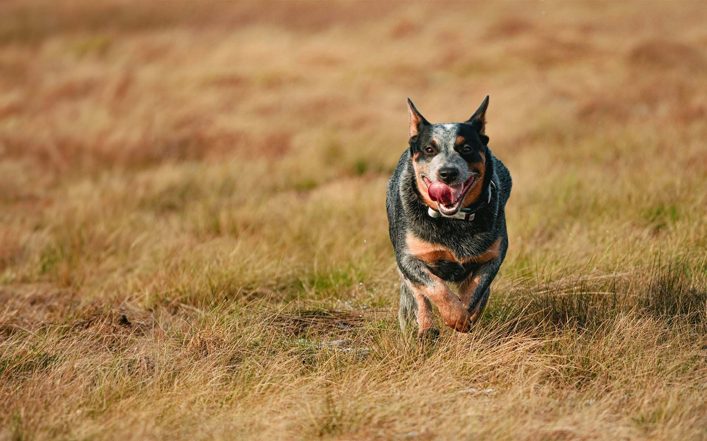
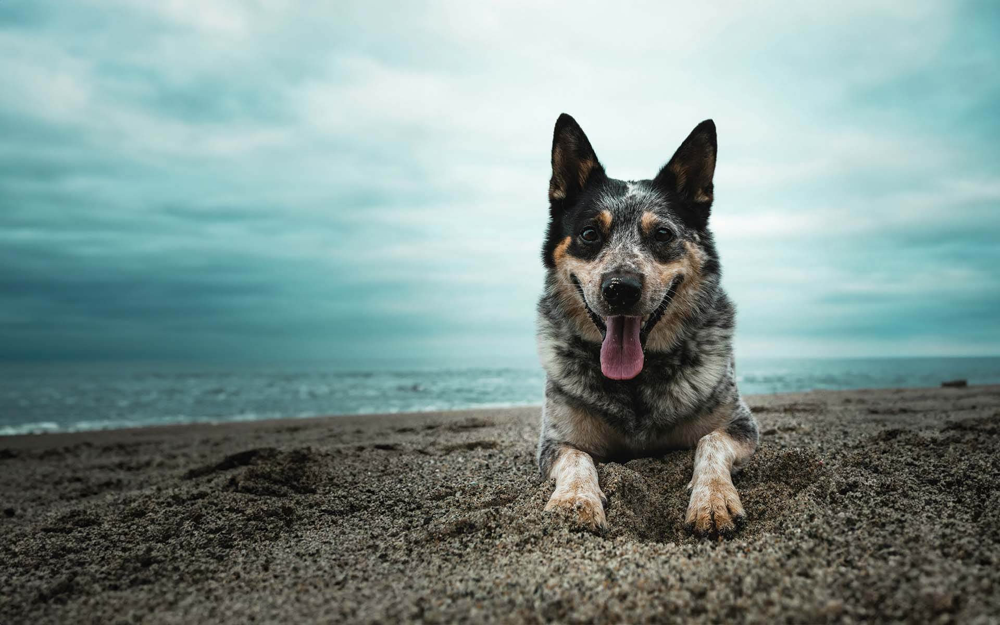
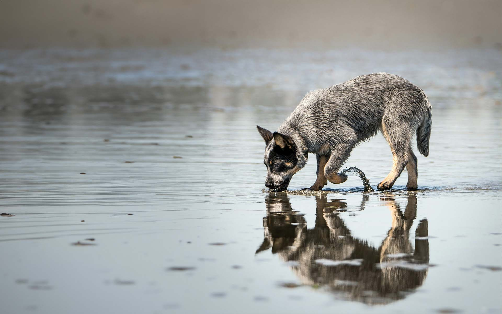
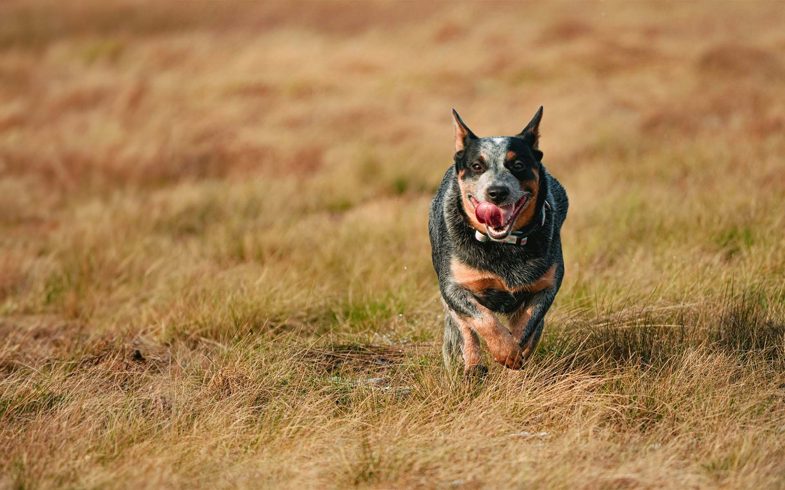
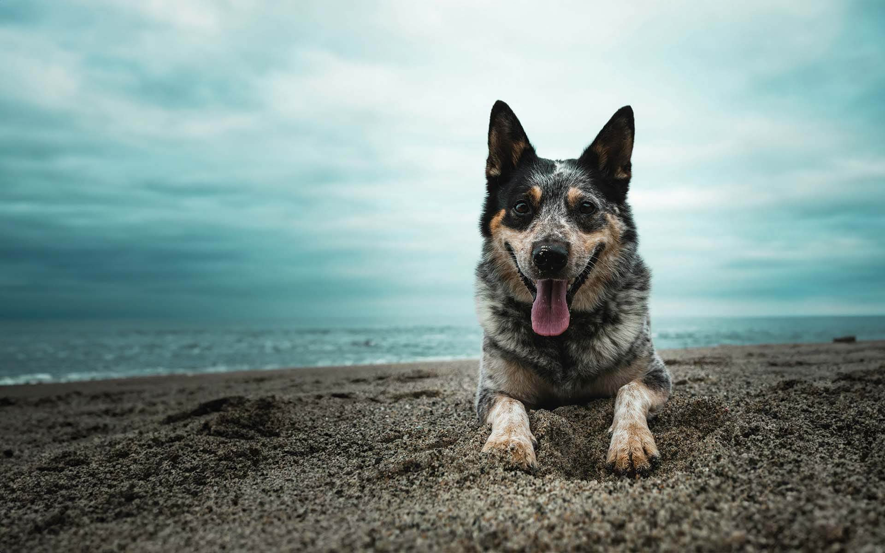
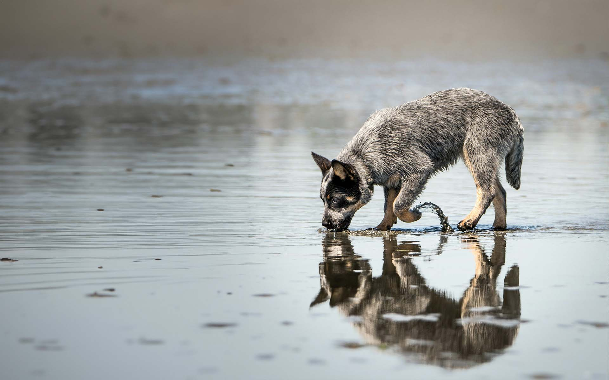

About the Breed
Exploring the Australian Cattle Dog
Welcome to our comprehensive guide on the Australian Cattle Dog, a breed known for its intelligence, agility, and unwavering loyalty. Here, we delve into the fascinating history, distinctive characteristics, and temperament of this remarkable breed.
History
The Australian Cattle Dog, also known as the Blue Heeler or Queensland Heeler, has a rich history rooted in the rugged terrain of Australia. In the 19th century, settlers in Australia faced the challenge of herding cattle across vast distances in harsh conditions. To meet this demand, they crossed British herding breeds with the native Australian Dingo, resulting in a resilient and hardworking canine known as the Australian Cattle Dog. This breed's exceptional herding abilities and adaptability quickly made it indispensable to Australian cattlemen.
Appearance
With a sturdy, medium-sized frame and a distinctive coat of blue or red speckled patterns, often with tan markings, this breed reflects its heritage as a resilient and agile working dog, well-suited to demanding environments.
- Medium-sized, robust frame
- Distinctive coat with blue or red speckled patterns
- Often features tan markings
- Reflects resilience and agility in appearance
Health Considerations
Overall, Australian Cattle Dogs are a robust and healthy breed with a lifespan of around 12 to 15 years. However, like all breeds, they are prone to certain health conditions, including hip dysplasia, progressive retinal atrophy (PRA), and deafness. Responsible breeding and regular veterinary care can help mitigate these risks.
Conclusion
The Australian Cattle Dog is a versatile and hardworking breed with a storied past and a bright future. Whether as a loyal companion, a skilled working dog, or a dedicated competitor in dog sports, the Australian Cattle Dog continues to capture the hearts of dog lovers around the world with its intelligence, athleticism, and unwavering devotion.
For more information on the Australian Cattle Dog or to inquire about acquiring one of these remarkable dogs, feel free to reach out to reputable breeders or rescue organizations dedicated to the breed.